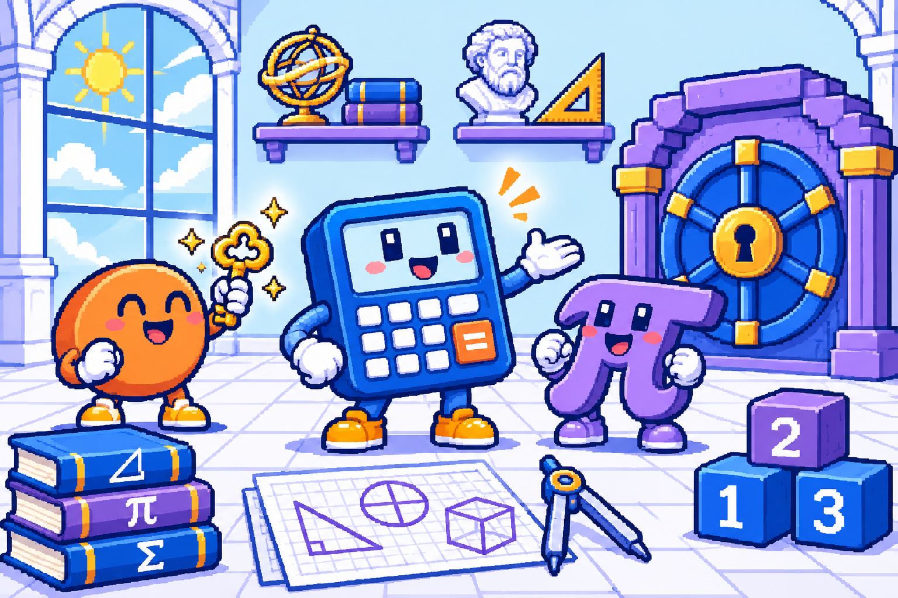

Inverse modulaire
1
Paramètres du calcul
Les exemples sont modifiables.
2
Un nombre à inverser ? Un message à chiffrer ?
Installez-vous : on fait les calculs ensemble.

Trouvez l’inverse d’un entier modulo n et vérifiez les conditions de son existence.
Calculez le PGCD, le PPCM et les coefficients de Bézout à partir de deux entiers.
Décomposez un nombre et comptez les entiers qui sont premiers avec lui.
Créez votre paire de clés RSA, chiffrez un message et retrouvez le texte d’origine.
Commencez par l’inverse modulaire : c’est lui qui permet de calculer la clé privée.